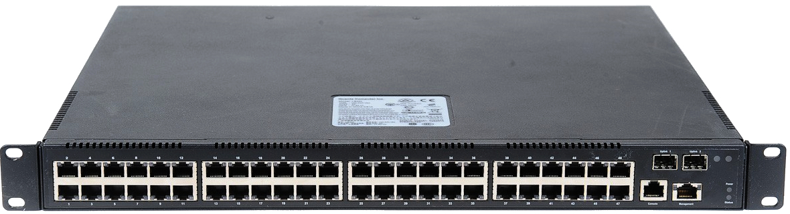
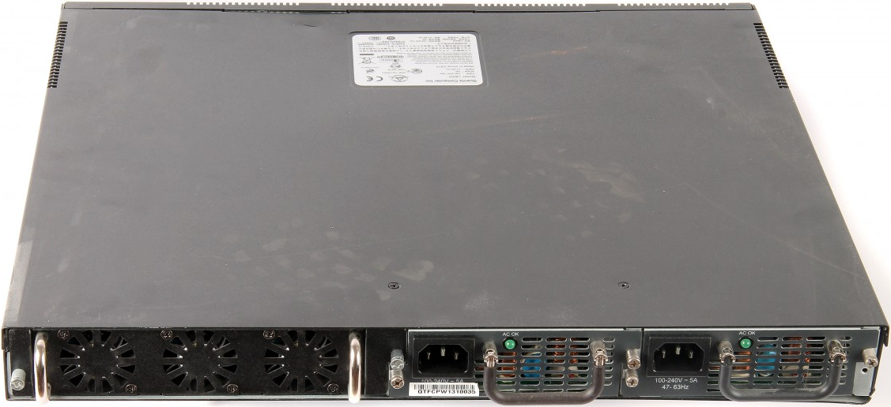

Overview¶
Switch Description¶
The Quanta LB4M is a modular Gigabit Ethernet backbone switch designed for adaptability and scalability. The Switch can utilize up to 48 Gigabit Ethernet ports to function as a central distribution hub for other switches, switch groups, or routers. The one built-in 1000/100/10 Ethernet ports for out of service. The LB4M also provides SFP+ interfaces for 10-Giga port on the daughter board. The number of 10-Giga ports depend on selecting daughter board.
Features¶
- Supports 48 10/100/1000BASE-T RJ45 Ethernet ports.
- 1 built-in 1000/100/10 Ethernet ports for out of service.
- Supports 802.1D STP, 802.1S MSTP, and 802.1w Rapid Spanning Tree for redundant back up bridge paths.
- Supports 802.1Q VLAN, Protocol-based VLAN, Subnet-based VLAN, MAC-based VLAN, Protected Port, Double VLAN, Voice VLAN, GVRP, GMRP, IGMP snooping, 802.1p Priority Queues, Port Channel, port mirroring.
- Support LLDP, VTP, Port Security.
- Multi-layer Access Control (based on MAC address, IP address, VLAN, Protocol, 802.1p, DSCP).
- Quality of Service (QoS) customized control.
- 802.1x (port-based) access control and RADIUS Client support.
- Administrator-definable port security.
- Per-port bandwidth control.
- IEEE 802.3z and IEEE 802.3x compliant Flow Control for all Gigabit ports.
- SNMP v.1, v.2, v.3 network management, RMON support.
- Supports Web-based management.
- CLI management support.
- DHCP Client and Relay support.
- DNS Client and Relay support.
- Fully configurable either in-band or out-of-band control via RS-232 console serial connection.
- Telnet remote control console.
- TraceRoute support.
- Traffic Segmentation.
- TFTP upgrade.
- SysLog support.
- Simple Network Time Protocol.
- Web GUI Traffic Monitoring.
- SSH Secure Shell version 1 and 2 support.
- SSL Secure HTTP TLS Version 1 and SSL version 3 support.
- ARP support.
- IP Routing support.
- OSPF v2 and v3 support.
- RIP v1 and v2 support.
- Router Discovery Protocol support.
- VLAN routing support.
- Virtual Router Redundancy Protocol (VRRP) support.
- IP Multicast support.
- Protocol Independent Multicast - Dense Mode (PIM-DM) support.
- Protocol Independent Multicast - Sparse Mode (PIM-SM) support.
- IGMP v1, v2, and v3 support.
- DVMRP support.
- IPV6 function - Supports DHCPv6 protocol, OSPFv3 protocol, Tnneling, loopback. Provides to configure IPv6 rotuing interface, routing preference.
Front-Panel Components¶
The front panel of the Switch consists of 48 1-Giga interfaces, 4 LED indicators, one built-in 1000/100/10 RJ-45 Ethernet service ports, an RS-232 communication port. The upper LED indicators display power situation. The lower LED indicators displays the status of the switch. Two LED indicators display the status of SFP+ interface, An RS-232 DCE console port is for setting up and managing the Switch via a connection to a console terminal or PC using a terminal emulation program.
Rear Panel Description¶
The rear panel of the Switch contains an redundant AC/DC power unit and three fans. The redundant AC/DC power unit is a two slots for redundant, hot-swappable power supply. The norminal input voltage in the range from 100 ~ 240 VAC at 48 ~ 62 Hz. The norminal output voltage set point 12 VDC, Minimum/Maximum output current is 2 Amps ~25 Amps.
Management Options¶
The system may be managed by using two Service Ports through a Web Browswer,Telent, SNMP Function and using the console port on the front panel through CLI command.
Web-based Management Interface¶
After you have successfully installed the Switch, you can configure the Switch, monitor the LED panel, and display statistics graphically using a Web browser
Note
To access the Switch through a Web browser, the computer running the Web browser must have IP-based network access to the Switch.
Command Line Console Interface Through the Serial Port or Telnet¶
You can also connect a computer or terminal to the serial console port or use Telnet to access the Switch. The command-line-driven interface provides complete access to all switch management features.
SNMP-Based Management¶
You can manage the Switch with an SNMP-compatible console program. The Switch supports SNMP version 1.0, version 2.0, and version 3.0. The SNMP agent decodes the incoming SNMP messages and responds to requests with MIB objects stored in the database. The SNMP agent updates the MIB objects to generate statistics. The Switch supports acomprehensive set of MIB extensions:
- RFC 1643 Ether-like MIB
- RFC 1493 Bridge
- RFC 2819 RMON
- RFC 2233 Interface MIB
- RFC 2571 (SNMP Frameworks)
- RFC 2572 (Message Processing for SNMP)
- RFC 2573 (SNMP Applications)
- RFC 2576 (Coexistence between SNMPs)
- RFC 2618 (Radius-Auth-Client-MIB)
- RFC 2620 (Radius-Acc-Client-MIB)
- RFC 1724 (RIPv2-MIB)
- RFC 1850 (OSPF-MIB)
- RFC 1850 (OSPF-TRAP-MIB)
- RFC 2787 (VRRP-MIB)
- RFC 3289 - DIFFSERV-DSCP-TC
- RFC 3289 - DIFFSERV-MIB
- QOS-DIFFSERV-EXTENSIONS-MIB
- QOS-DIFFSERV-PRIVATE-MIB
- RFC 2674 802.1p
- RFC 2932 (IPMROUTE-MIB)
- Quanta Enterprise MIB
- ROUTING-MIB
- MGMD-MIB
- RFC 2934 PIM-MIB
- DVMRP-STD-MIB
- IANA-RTPROTO-MIB
- MULTICAST-MIB
- FASTPATH-ROUTING6-MIB
- IEEE8021-PAE-MIB
- INVENTORY-MIB
- MGMT-SECURITY-MIB
- QOS-ACL-MIB
- QOS-COS-MIB
- RFC 1907 - SNMPv2-MIB
- RFC 2465 - IPV6-MIB
- RFC 2466 - IPV6-ICMP-MIB
- TACACS-MIB
- USM-TARGET-TAG-MIB
- IGMP/MLD Snooping
- IGMP/MLD Layer2 Multicast
- QoS – IPv6 ACL
- Voice VLAN
- Guest VLAN
- LLDP MED
- RFC 2925 (DISMAN-TRACEROUTE-MIB)
- RFC 2080 (RIPng)